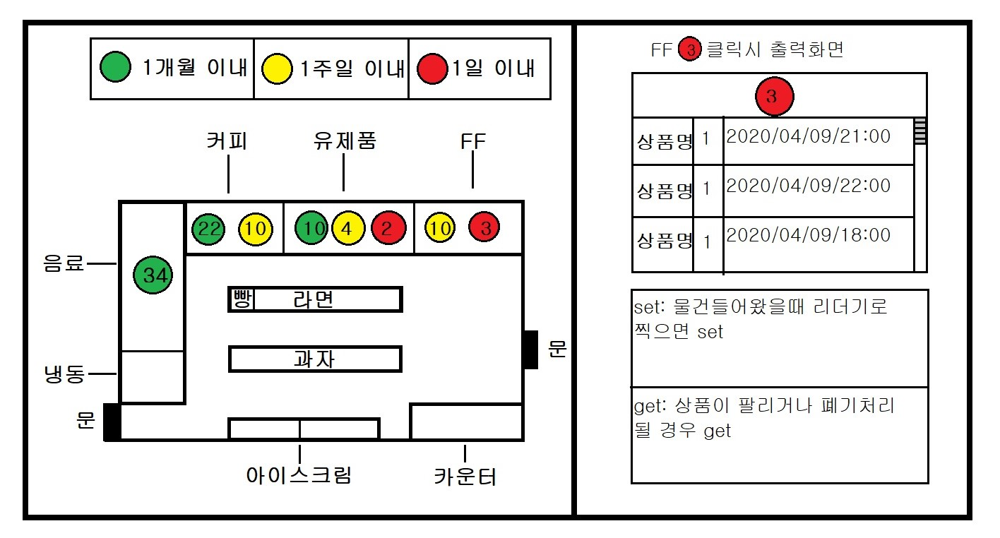
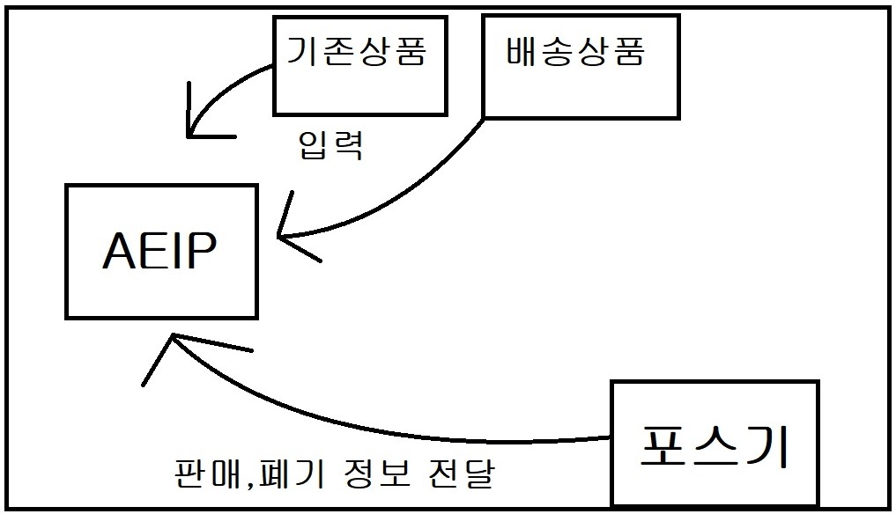

유통기한 자동검수프로그램 AEIP

Q: 왜 구상하게 되었나?
A: 편의점에서 일을 해봤다면 다들 공감할거다. 유통기한 검사하는게 상당히 귀찮다
유제품이나 FF같은경우 매일하기때문에 그렇다쳐도 라면이나 구석에 쳐박힌 커피류를
검사하는 일은 정말 귀찮다.그리고 일단 도입해서 사용하면
점주나 알바나 정말 편하게 사용할것 같아서 구상해봤다.
Q: 어떤 프로그램인지 간단히 설명좀
A: 말그대로 매장에 진열된 상품들의 유통기한을 한눈에 파악하고
관리할 수 있는 프로그램이다. 일일이 확인해야하는 시간소비를 줄일수 있고,
유통기한이 얼마 안남은 제품들을 미리 확인하고 발주해서 기회로스를 줄일수 있다.
Q: 어떻게 구현할 생각인가?
A: 우선 AEIP(Auto ExpiryDate Inspection Program)을 개발한다.
대략적인 알고리즘은 기존에 있던 상품 + 새로 들어오는 상품을 리더기로 찍어서
AEIP에 입력시키고 상품이 판매되거나 폐기처리 됬을때 포스기에서
그 상품의 바코드 고유번호를 통해 상품정보를 AEIP 에 전달하는 형식이다.

*고민중인 내용* : AEIP를 web프로그램으로 만들어야 할지, 포스기에 내장시켜야 할지,
어플리케이션으로 만들어야할지 고민중
1. web프로그램으로 만들경우
만드는데 있어서 젤 편할거 같음. 포스기에서 정보를 전달받는것만 해결하면 금방만들듯
단점: 인터넷이 연결되어있지 않거나 , 카운터에서 web화면을 보지 못할수도 있음
2. 포스기에 내장시킬 경우
솔직히 될지 모르겠음; 포스기에 업데이트 해야한다는 내용에서 무리인듯
3. 어플리케이션으로 만들경우
가장 유용하게 사용될거같음. 이걸로 갈까?